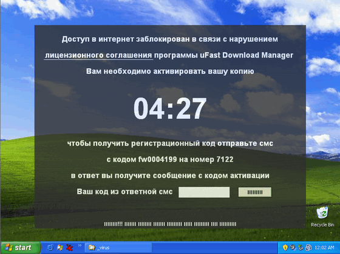

PCSAFETY
Вирус - Winlock (Блокировщик)
WinLock – семейство компьютерных вирусов, которые препятствуют работе компьютера и требуют совершить денежный платеж в пользу автора. WinLock выделяют в отдельное семейство вредоносного ПО. Этот тип программ не имеет функции размножения, которая характерна для семейства вирусного ПО. Отсутствуют в нем и возможности сокрытия своей деятельности, характерные для троянов. Наоборот, WinLock не скрывается, а блокирует работу ПК, вымогая деньги. Печально, что раньше пользователь мог получить заветный код разблокировки компьютера, пополнив мобильный счет мошенникам, или, отправив дорогую СМС. В настоящий момент, почти все блокировщики требуют перечисления денег на счет WM, утверждая что код разблокировки будет напечатан на чеке, выданном терминалом. Само собой, это не может быть правдой. Практически все версии WinLock грозят удалить всю информацию или сломать компьютер в случае, если пользователь попытается удалить вирус с ПК не заплатив.
